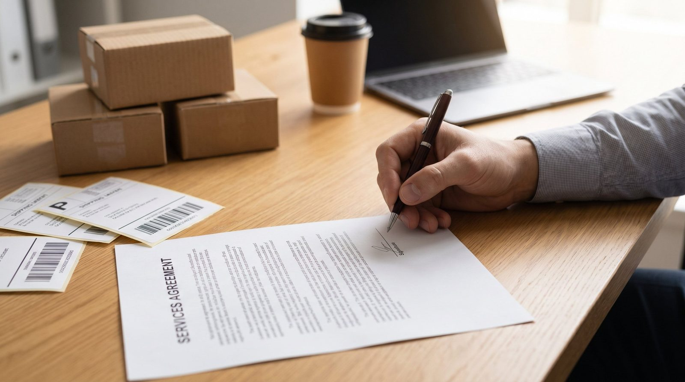

De fleste webshops er startet på standard fragttakster fra den leverandoer der tilfældigt endte med at være nemmest at kome i gang med. Og saa er de der stadigvaek, selv fem år og 500 pakker om maaneden senere.
Det er en dyr vane. Standardpriserne er designet til den laeste volumen. Når du sender mere, betaler du for meget, medmindre du forhandler.
Her er hvad du skal vide inden du tager den samtale.
👉 SmartPack giver dig det volumenoverblik du skal bruge til en forhandling. Se hvilke data systemet leverer
Hvornår er du klar til at forhandle?
Transportoererne er interesserede, når du er interessant for dem. Det vil sige når du har volumen.
- Under 300 pakker/maaned: Standard-aftaler er det realistiske. Du har ikke volumen nok til at være attraktiv for et individuel tilbud. Undtagelse: hvis du kan samle volumen med andre (fx via en fragtmaekler).
- 300-800 pakker/maaned: Du er begyndt at være interessant. Transportoererne vil gerne have dig, men du har ikke nok leverage til at kræve store rabatter. Forvent 10-20% under standard.
- 800-3.000 pakker/maaned: Her er du en attraktiv kunde. Du har reel forhandlingsstyrke. Forvent 20-35% under standard, plus serviceniveaugarantier.
- Over 3.000 pakker/maaned: Du er en stor kunde for de fleste transportoerer. Her er der mulighed for skraeddersyede aftaler, volumenbonusser og direkte account manager-kontakt.
Husk: du forhandler med maaletallet. Kom til mødet med data. Antal pakker pr. maaned, gennemsnitlig vaegt, fordeling på leveringstyper (pakkeshop, hjem, erhverv), og geografisk fordeling. Jo mere konkret, des bedre dit udgangspunkt.
Hvad du kan kræve ud over prisen
Pris er det oplagte, men ikke det eneste der er vaerd at forhandle om:
- Fastprisgaranti. Inddaempning af prisjusteringer midt i aftaleperioden. Transportoerer hjaever gerne priser med 6-12 maaneders varsel. Krav om maksimal stigning (fx 3% om året).
- Braendstoftillaeg. Mange aftaler indeholder et variabelt braendstoftillaeg oven i basisprisen. Dette kan enten fjernes, fixeres eller gives et loft.
- Gratis afhentning. Over et bestemt dagligt antal kan du typisk faa daglig afhentning inkluderet i stedet for at betale pr. tur.
- Serviceniveaugaranti. Hvad er konsekvensen hvis pakken ikke leveres inden for den lovede tid? Faa det skrevet ind som en kompensationsklausul.
- API-integration. Adgang til transportoerens API til automatisk labelgenerering og tracking-opdatering i dit WMS. Mange leverandoerer tilbyder dette gratis ved abonnementsaftaler.
Undgå disse fejl i forhandlingen
De her fejl ser vi igen og igen:
- For optimistisk volumenprojektioner. "Vi regner med at sende 2.000 pakker om maaneden om seks maaneder." Og saa nar de det ikke. Aftalen har volumenkrav, du falder under dem, og du betaler straf. Saet dine projkektioner 20-30% lavere end forventet.
- Underskriver uden at laese det med smaabogstaver. Kig spesielt på voluminkrav, straf ved under-forbrug, og varslingstider for prisstigninger.
- Bare forhandler med een leverandoer. Indhent altid tilbud fra mindst to-tre transportoerer. Det giver dig konkurrencesituationen som forhandlingskort.
- Glemmer at værdiansætte service. Billigst er ikke altid bedst. En 5 kr. billigere pakke der leveres sent eller beskadiget koster mere end de 5 kr. i kundeservice og retur.
Hvornår bør du skifte leverandoer?
En fragtaftale er ikke for livet. Sigt på en 1-2 aars aftale med mulighed for forlaengelse. Skifte når:
- Klageprocenten på leveringstid overskrider 2% konsekvent.
- Din nuværende leverandoer ikke understotter de forsendelsestyper du vil vaekse ind i (fx udenlandsk levering, store/tunge pakker).
- Prisen er mere end 15-20% over markedsstandard, og leverandoeren ikke vil forhandle.
Konkurrencen om din forretning er reel. Transportoererne veed at det er besvaerligt at skifte, og de regner med at kunderne bliver af den grund. Vis dem at du er parat til at skifte, og du vil næsten altid faa et bedre tilbud.
SmartPacks rolle i en forhandling
For at forhandle godt skal du kende dine egne tal. SmartPack viser forsendelsesdata pr. transportoer, gennemsnitlig pakkevaegt og volumenudvikling maaned for maaned. Det er data du kan tage med direkte til forhandlingsbordet.
Når aftalen er på plads, integrerer SmartPack med de største danske og nordiske transportoerer, saa labelprint, tracking og fragtberegning sker automatisk fra systemet.